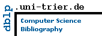

Martin Przyjaciel-Zablocki
List of publications from the
DBLP Bibliography Server
-
FAQ
Ask others: ACM
DL
/
Guide
-
-
CSB
-
MetaPress
-
Google
-
Bing
-
Yahoo
2011
1
Alexander Schätzle
, Martin Przyjaciel-Zablocki,
Thomas Hornung
,
Georg Lausen
: PigSPARQL: Übersetzung von SPARQL nach Pig Latin.
BTW 2011
: 65-84
Coauthor Index
1
Thomas Hornung
[
1
]
2
Georg Lausen
[
1
]
3
Alexander Schätzle
[
1
]
Copyright ©
Tue Jun 14 22:45:01 2011 by
Michael Ley
(
ley@uni-trier.de
)